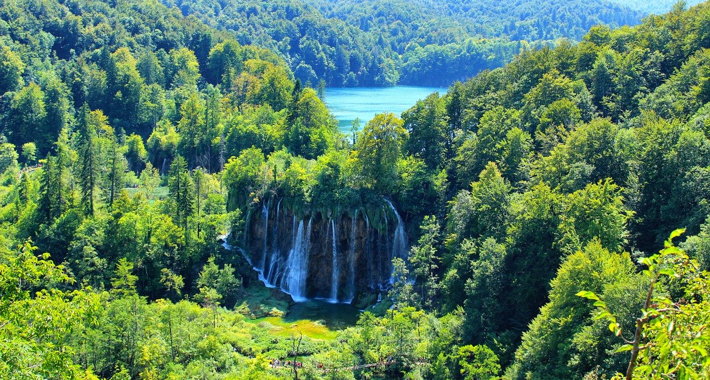

O UNESCO-u
UNESCO je organizacija Ujedinjenih naroda (UN-a) čiji je glavni cilj postići suradnju među nacijama na području obrazovanja, znanosti i kulture. UNESCO-ov popis svjetske baštine jedan je od projekata kojim se to ostvaruje, a spomenici se uvrštavaju na popis temeljem jednog ili više od 10 kriterija.
Popis sadrži ukupno 1121 spomenik u 167 država, od čega:
- 869 spomenika kulture
- 213 spomenika prirode
- 39 mješovitih spomenika
Dio spomenika se prostire na području više država (39), a nažalost, njih 53 je ugroženo zbog ljudske aktivnosti i nemara.
UNESCO provodi svoje aktivnosti putem 4 glavnih programa:- prirodne i društvene znanosti
- sociologija
- kultura
- komunikacija i informatika
O baštini u Hrvatskoj
U Hrvatskoj se nalazi 10 mjesta svjetske baštine, od kojih su 2 prirodne, a 8 kulturne baštine. Njih možete pretraživati ovdje.
Ovako je izgledao tijek unošenja Hrvatskih spomenika na popis svjetske baštine:
| Godina | Broj | Naziv |
|---|---|---|
| 1979. | 3 | Nacionalni park Plitvička jezera, Povijesni kompleks Splita i Dioklecijanova palača, Stari grad Dubrovnik |
| 1997. | 2 |
Kompleks Eufrazijeve bazilike u povijesnom središtu Poreča, Povijesni grad Trogir |
| 2000. | 1 | Katedrala Svetog Jakova u Šibeniku |
| 2008. | 1 | Starogradsko polje |
| 2016. | 1 | Stećci - srednjovjekovni nadgrobni spomenici |
| 2017. | 2 | Obrambeni sustavi Republike Venecije 16. i 17. st. u Zadru i Šibeniku, Bukove prašume i izvorne bukove šume Karpata i ostalih regija Europe |